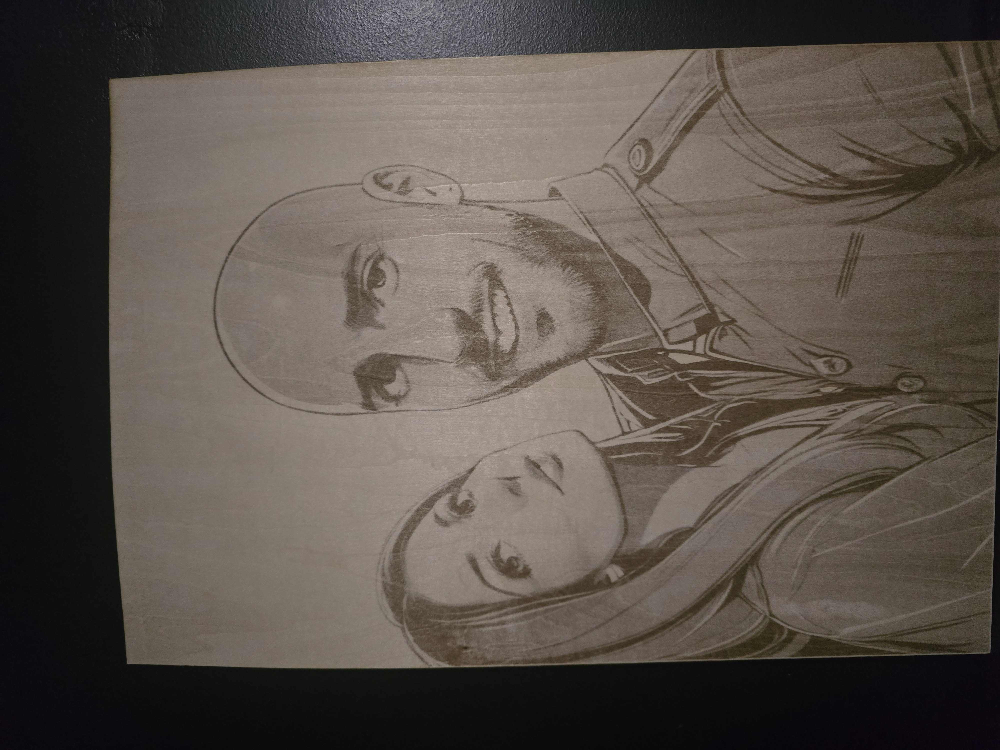

Gravure Laser de Précision sur Bois – Laser & Matière by Toutefer
Chez Laser & Matière à La Châtaigneraie, nous sublimons le bois grâce à la gravure laser de haute définition. La chaleur du laser permet de créer des contrastes profonds et des détails fins sur toutes les essences : tilleul, chêne, bambou ou hêtre. Nous garantissons un marquage permanent sans peinture ni autocollant – uniquement la précision du laser.
Applications de la Gravure Laser sur Bois
La gravure laser sur bois est idéale pour vos cadeaux personnalisés (planches, coffrets, albums), votre signalétique (enseignes, plaques) ou vos projets artistiques. Une gravure durable et élégante, adaptée aussi bien aux particuliers qu’aux professionnels.
© Laser & Matière by Toutefer – Gravure et laser à La Châtaigneraie (Vendée)

← Retour à l'accueil